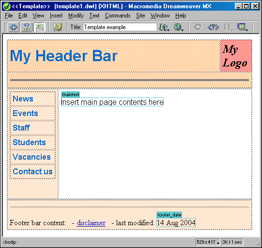

Important Aspects of HTML and CSS
Here are some of the important aspects of HTML and CSS:
- HTML decides the web page structure and its content whereas CSS decides the presentation and styles for its beautification.
- Refer http://www.quackit.com/html_5/tags/ for quick reference to little brush up of all essential HTML tags.
- A web page area is divided in five major sections. It has header at the top, a navigation bar at left, a navigation bar at right, a footer at the bottom and content/body area at the center. See below example. Not all sections may be utilized at the same time.
- These sections can be implemented using div tags. div tag is preferred over table tag as it is lot more powerful when combined with CSS styles and positioning.
- CSS enables web page developers to finely tune elements for publishing both online and across several different types of media, including print format.
- The 3 levels of CSS are:
- CSS1 defines basic style functionality, with limited font and limited positioning support.
- CSS2 adds aural properties, paged media, and better font and positioning support. Many other properties have been refined, as well.
- CSS3 adds presentation-style properties, allowing you to effectively build presentations from Web documents (similar to Microsoft PowerPoint presentations).
- CSS refers to the location of declarations as follows:
- Author origin: The author of a document includes styles in a style section or linked sheets (via link tag).
- User origin: The user (viewer of document) specifies a local style sheet.
- User Agent origin: The user agent specifies a default style sheet (when no other exists).
- The CSS standard uses the following rules to determine which style to apply:
- Find all style declarations from all origins that apply to the element.
- For normal declarations, author style sheets override user style sheets, which override the default style sheet. For !important style declarations, user style sheets override author style sheets, which override the default style sheet.
- More specific declarations take precedence over less specific declarations.
- Styles specified last have precedence over otherwise equal styles.

Did you like it?